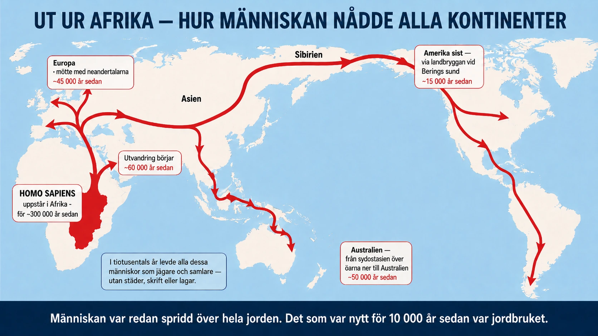

Standardtexten börjar med människor som jägare och samlare. Men vilka var de, och var kom de ifrån? För att förstå det måste vi backa bandet långt — mycket längre än de 10 000 år som jordbruket är gammalt.
Vi var inte den enda människan. I dag finns bara en människoart på jorden: vi, Homo sapiens. Det känns självklart, men det är faktiskt ovanligt. Under större delen av historien fanns flera olika människoarter samtidigt. En av de tidigaste vi brukar räkna som "människa" är Homo habilis, som levde i Afrika för ungefär två miljoner år sedan. Namnet betyder "den händiga människan", för hon tillverkade enkla verktyg av sten. Efter henne kom Homo erectus, "den upprättgående människan", som var den första att vandra ut ur Afrika och sprida sig över stora delar av Asien. Homo erectus lärde sig sannolikt att använda elden — en av de viktigaste upptäckterna i hela människans historia.
Grannarna vi delade jorden med. När vår egen art, Homo sapiens, uppstod i Afrika för ungefär 300 000 år sedan var vi alltså inte ensamma. I Europa och västra Asien levde redan neandertalarna, Homo neanderthalensis — en robust, köldtålig människoart med större hjärnor än våra, som tillverkade verktyg, begravde sina döda och jagade stora djur. Länge framställdes neandertalarna som dumma "grottmänniskor", men den bilden har forskningen rivit ner: de var skickliga och anpassade till ett hårt istidsklimat.
Vi möttes — och fick barn. Det mest fascinerande är vad som hände när sapiens och neandertalarna träffades. De levde inte bara sida vid sida — de fick barn tillsammans. Det vet vi eftersom forskare har lyckats läsa neandertalarnas arvsmassa ur gamla ben, och jämfört den med vår egen. Nästan alla människor med rötter utanför Afrika bär i dag ett par procent neandertal-DNA. Det betyder att om du har förfäder från Europa eller Asien, så finns det en liten bit neandertal kvar i dig. Neandertalarna dog ut för ungefär 40 000 år sedan — men på sätt och vis lever de vidare i oss.
Ut över hela jorden. Homo sapiens stannade inte i Afrika. För ungefär 60 000 år sedan började grupper vandra ut, och sedan gick det — med forntida mått — förvånansvärt fort. Människan spred sig till Asien, till Europa, och vidare till Australien över hav som måste ha krävt någon form av båtar. Sist av allt nåddes Amerika, troligen genom att människor under istiden gick över en landbrygga där Berings sund ligger i dag, mellan Sibirien och Alaska, och sedan spred sig söderut genom hela kontinenten. På några tiotusentals år hade människan nått nästan varje hörn av jorden.

Och här är poängen. Under hela denna oerhört långa tid — miljoner år för människosläktet, tiotusentals år för vår egen art över hela jorden — levde människorna som jägare och samlare. De var kloka, skickliga och spridda över alla kontinenter. Men de byggde inga städer, skrev inga lagar och reste inga tempel som bestod. Det som var nytt för 10 000 år sedan var alltså inte människan. Människan hade redan funnits mycket länge. Det nya var jordbruket. Och på några få platser på jorden var scenen nu satt för något som skulle förändra allt.